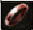

importante esta es una guía de puntos pvp las traducciones no estan del todo bien y el orden de la guía es el mismo que de los puntos pvp. Es decir si estas en el listado de los 1000 puntos y en la guía sale WIZ HAT como primer puesto ese es el orden
1.- una pocion de vida 120+hp
2.- una pocion de mana 60+mp
3.- una bat wing esta ala te dejara onde dejaste grabado a tu pj
1.- 50 unidades de esta hierba "BELLE"
2.- 50 unidades de esta hierba "Hierba Lunar"
 3.- 50 unidades de esta hierba
3.- 50 unidades de esta hierba
4.- 50 botellas
Juntando estos dos tipos de items los llevas al npc de tu nacion y los cambias por una pocion que cura el 15% de vida de tu pj "todo depende de la vida de tu pj"
+  =
=
Mediciones de polvo (los consumibles utilizados para ingresar a los tamaños de la Zona de Rift a través de NPC en la Carretera Confederada en Astir)
1.- Sombrero de mago (+1 INT y +30MP, solo para Magos)
2.- Capa de lino (recistencia ice 3%, all jobs)
2.- Escudo grande(+16 de defensa 5% de recistencia al hielo y fuego y no se puede usar arriba del caballo, Paladines y Warlord)
Para poder tener el WIZ HAT tienes que juntar 150 fighti pelt (pelos) y 50 Hierba Lunar teniedo todos esos items vas al npc de tu nacion y lo cambiar por el WIZ HAT
+ + =
1.- Guantes finos: (Acolyte, Def 6, protección mágica + 1%; cuando es +7 o superior, agrega int +1 y protección mágica + 4%) lvl requerido 50
2.- Guantes lunares: (Mago, Def 5, Ataque mágico + 1%; cuando es +7 o superior, agrega int +1 y Ataque mágico + 4%) lvl requerido 50
3.- Botas finas: (Warrior,Acolyte Def 7, Acc +2, Cuando es +7 o superior, agrega Velocidad de movimiento + 5%) lvl requerido 48
4.- Botas lunares: (Scout, Mage, Def 7, Esquivar +2, Cuando es +7 o superior, agrega Velocidad de movimiento + 5%) lvl requerido 48
5.- Cald Boots: (Warrior, Provocatour, Ascetic, Assasin, Saboteur, Monk, exo, Def 7, Burn Resist + 2%, cuando es +7 o superior, agrega Stamina +2 y Burn Resist + 6%) lvl requerido 47
5.- Gothic Plate: (Warlord, Paladin, Def 25, Stun Resist + 1%, cuando es +7 o más, agrega Stun Resist + 4%) lvl requerido 52
1.- Anillos de berserk (All jobs, Atk +1, STR +2, Int -2) lvl requerido 1
2.- Anillos antiguos (All jobs, Int +2, STR -2) lvl requerido 1
 3.- Cazador de anillos (all jobs, Destreza +1, aumenta la distancia de la flecha) lvl requerido 1
4.- Espíritu del anillo (all jobs, Spi +2, MP +10) lvl requerido 1
5.- Peal de cristal (all jobs, Resistencia mágica + 3%) lvl requerido 1
6.- Anillos abrasadores (all jobs, Resistencia al hielo -2%, 3% de probabilidad de grabar aciertos) lvl requerido 40
7.- Perforación del anillo (all jobs, Acc +3, Daño crítico + 1%) lvl requerido 40
1.- Cinturón (All jobs, Dexterity +1, Acc +6)
 2.- Cinturones Speedy (all jobs, Agi +1, Esquivar +6)
2.- Cinturones Speedy (all jobs, Agi +1, Esquivar +6)
3.- Cinturones de guardianes (all jobs, Def 4, Sta +1, Protección mágica + 1%)
4.- Cinturón de toxinas (all jobs, Resist Poison + 6%, Light Resist -5%)
5.- Botas Felix (all jobs, Def 5, LP y MP + 3%, con TBD mejorado, agrega% a SP y MP)
6.- Botas de aventurero (all jobs, Def 1, Sleep y Trips Resist + 5%, con TBD mejorado, agrega Def y protección mágica)
1.- 50 unidades de esta hierba "BELLE"
2.- 50 unidades de esta hierba "BELLE"
3.- 50 unidades de esta hierba "BELLE"
4.- 50 unidades de esta hierba "BELLE"
5.- 50 unidades de esta hierba "BELLE"
1.- 50 unidades de esta hierba "BELLE"
2.- 50 unidades de esta hierba "BELLE"
3.- 50 unidades de esta hierba "BELLE"
4.- 50 unidades de esta hierba "BELLE"